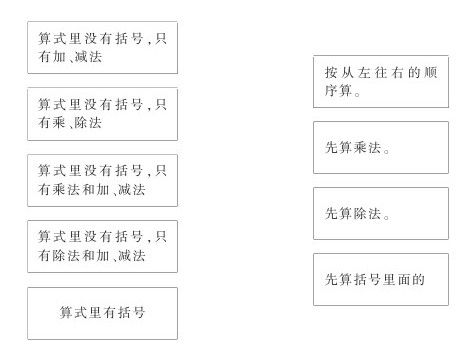

“混合运算和两步计算的应用题整理和复习”教学设计与评析 [1]
教学内容：九年义务教育六年制小学数学第四册18～19页“整理和复习”及练习五中的1～4题。
教学目的：
1.使学生初步掌握混合运算顺序，能按照脱式计算的格式正确地进行计算。
2.使学生初步掌握两步应用题的分析方法，会分步列式解答比较容易的两步计算应用题。
3.学会先想后说，能用较完整的语言表达自己的解题思路及解答方法。
4.培养学生分析问题和解决简单实际问题的能力及书写规范的良好习惯。
教学重点、难点：
1.使学生初步掌握含有两级运算而没有括号，乘、除法在后的两步式题的运算顺序。
2.两步应用题的结构以及它与一步应用题的联系和区别。
教学关键：提出中间问题，确定先算什么。
教具：投影仪、投影片、小黑板、计算卡片等。
教学过程
一、揭示课题
开学到现在已经三周了，同学们学习的积极性很高，学了不少知识。请你们回忆一下，在数学课上都学了哪些知识？（随着学生的回答出示课题——混合运算和两步计算的应用题）这些知识都是进一步学习的基础，必须切实学好。这节课我们进行“混合运算和两步计算的应用题”的整理和复习。大家比比看，这些知识谁掌握得最好。
[评：一上课教师就直接触及学生的情绪领域，通过激励，创设了一个良好的学习氛围，使学生在最佳的心理状态下进行学习]。
二、整理和复习
这节课的整理和复习，我们分两部分进行，先进行混合运算的整理和复习，后进行两步计算的应用题的整理和复习。
（一）整理和复习混合运算（板书：混合运算）。
1.提问：请同学们回想一下，我们都学了哪些两步计算的式题？看哪位同学举得实例最多？
同学们举例，教师有意识地进行以下三种情况归类（板书）。
（1）在没有括号的算式里，只有加、减法或只有乘、除法的。
（2）在没有括号的算式里，只有乘法和加、减法或只有除法和加、减法。
（3）算式里有括号的。
它们的运算顺序是怎样的呢？看谁能全部准确地说出来。
第一种类型，是按从左往右的顺序依次运算（板书：从左往右依次运算）；第二种类型是先算乘除法（板书：先算乘除法）；第三种类型是先算括号里面的（板书：先算括号里面的）。
2.做18页第1题，把条件和正确的算法连起来，看谁连得又对又快。

学生在书上连，教师巡视，发现有连错的，将这个学生的连法画在投影片上，投影出来后集体讨论纠正。
3.完成18页第2题
34+28-47
（16-9）×8
83-6×4
30+48÷6
让四名同学各板演1道题，做完后，检查计算结果，有做不对的，让其他同学分析做错的原因，帮助更正。
4.小结（投影填空）
在计算混合运算式题时，要认真审题，先看式题中有没有小括号，有小括号要先算小括号里面的；再看式题中有没有乘除法，有乘除法就要先算乘法或除法，如果算式中只有加减法或只有乘除法，就要按从左往右的顺序算。
[评：先让学生举两步计算式题的实例，说运算顺序，再进行系统归纳、整理、小结，使学生拾级而上，既能在及时反馈、矫正中弥补所学知识的缺陷，又能摆正自己在学习过程中所处的位置，深切感受学习数学的乐趣及获得成功的喜悦。]
（二）整理和复习两步计算的应用题。（板书：应用题）
1.根据问题，说出数量关系式。（板书：数量关系）
（1）松树和杨树一共有多少棵？
（松树的棵数+杨树的棵数=一共的棵数）
（2）男生比女生多几人？
（男生数-女生数=男生比女生多几人）
（3）小鸡的只数是大鸡的几倍？
（小鸡的只数÷大鸡的只数=倍数）
〔评：数量关系是应用题中固有的，通过逆向思维的导向，帮助学生掌握分析应用题的方法，分散难点，减缓学习两步应用题的坡度。〕
2.根据题意，写出先求什么，并列出这一步的算式。（板书：中间问题）
（1）同学们做红花25朵，做的黄花比红花少4朵，红花和黄花共做多少朵？
要先求：黄花做了多少朵？
算式是：25-4=21（朵）
（2）农机厂十一月份共生产农机62台，上半月生产28台，下半月比上半月多生产多少台？
要先求：下半月生产了多少台？
算式是：62-28=34（台）
（3）公园里有6只小猴，大猴的只数是小猴的4倍，公园里一共有多少只猴？
要先求：大猴有多少只？算式是：6×4=24（只）
[评：提出中间问题是解答两步应用题的关键，强化提中间问题的练习，利于学生掌握两步应用题的结构和解答方法，根据要求的问题确定需要知道的数量，从而确定先求什么，再求什么。]
3.解答下列应用题。（板书：列式、计算）
（1）缝纫组进来24米布，做床单用去16米，还剩多少米？
（2）缝纫组进来24米布，做床单用去16米，做校服用去4米，还剩多少米？
（3）缝纫组进来24米布，做了9套校服，每套用布2米，还剩多少米？
（4）缝纫组进来24米布，做床单用去16米，剩下的布做了4套同样的校服，每套校服用布多少米？
[评：两步应用题是一步应用题的基础上引伸和发展的，通过一组题的练习、比较，使学生进一步明确一步应用题和两步应用题之间的内在联系和区别，以更好的掌握两步应用题的结构特点及解题规律]
三、课堂练习
1.口算先面各题，并说出每题先算什么。
24+6×3
35-25+10
38-56÷4
3×8÷4
9×（3+4）
（16-9×8）
2.把左边的算式与右边的答案用线连起来。
3×（3-3） 4
（3+3）÷3 1
3-3+3 0
3+3÷3 3
3÷3-（3-3） 2
3.改错并说出下面各题错在哪里？为什么错？
（1）52-32÷4=20÷4=5
错在先算52-32，因为，在没有括号的算式里，有除法和减法，要先算除法。
（2）18÷3×6=18÷18=1
错在先算3×6，因为，在没有括号的算式里，只有乘除法，要按从左往右依次计算。
4.解答下列应用题。
（1）校办缝纫厂进来35米花布，30米蓝布。做校服用去62米，还剩多少米？
（2）商店运来48台电视机，上午卖出18台，下午卖出12台，还剩多少台？
（3）二年级（1）班有26名男同学，22名女同学，每8个同学为一组，全班可以分成几组？
（4）小军原有6种画片，每种4张，又买来5张，它现在有多少张画片？
（5）学校买来童话书55本，又买来科技书30本，一共买了多少本书？（把这道题改编成两步计算的应用题，再算出来。）
[评：“练习是使学生掌握知识、形成技能、发展智力的重要手段。”设计有针对性、趣味性、难易适度的练习在课内进行，及时、准确地评价教学效果，不仅满足了学生的心理需求，而且增强了他们学习的积极性。]
四、作业
完成教科书19页第3题及练习五中的1—4题。教科书中第3题的（1）—（3）题只列算式。练习五中的2题把计算结果直接填在横线上。4题列出算式后，同学们之间相互讨论解答方法。
[评：综合练习，学生自我评价学习效果，使教学过程成为师生共同参与、评价的过程，让学生掌握学习的主动权，真正成为学习的主人。]
五、课堂小结
这节课我们学习的是——（学生即时回忆或按板书设计回答）“混合运算和两步计算的应用题”的整理和复习。在计算混合运算时要认真审题，先看……再看……如果……在解答两步计算应用题时，要按照下列步骤进行——认真审题→分析数量关系→提出中间问题→分步列式计算→写答语。这节课，大家学得很好，我相信在今后的学习稍复杂的混合运算和应用题时，大家会学得更好。
[评：再现结语，加深印象，鼓励学生好好学习，百尺竿头，更进一步。]
总评：
1.整个教学过程设计科学、合理，符合学生的接受能力，符合学生的认知规律，符合“整理和复习”课型的基本要求——归类、整理，使知识系统化，形成网络清晰的整体认知结构。
2.把学生始终推到主体地位，让他们动脑、动口、动手，给他们创造表现的机会，既激发了他们学习的兴趣，又巩固了所学知识，培养了学生分析、判断和解决简单实际问题的能力，从而保证了教学任务的全面完成。
3.练习设计有层次、有坡度，利于基础较差学生接受，把因材施教和大面积提高教学质量落到实处。
4.师生情感交融，有力地促进了学生知、情、意、行的协调统一，把智力因素与非智力因素的培养贯穿于教学过程之中。